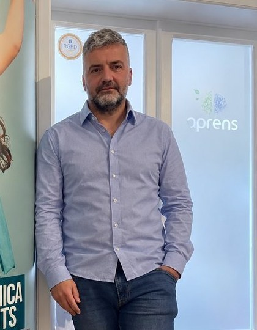
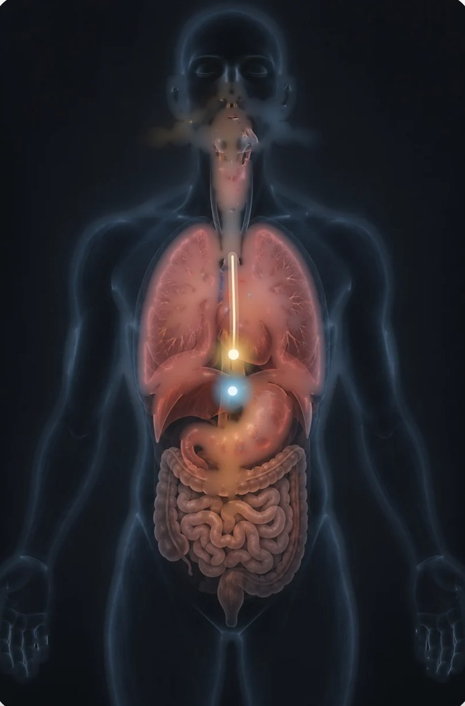
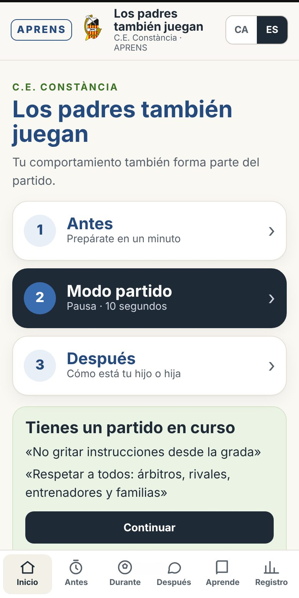
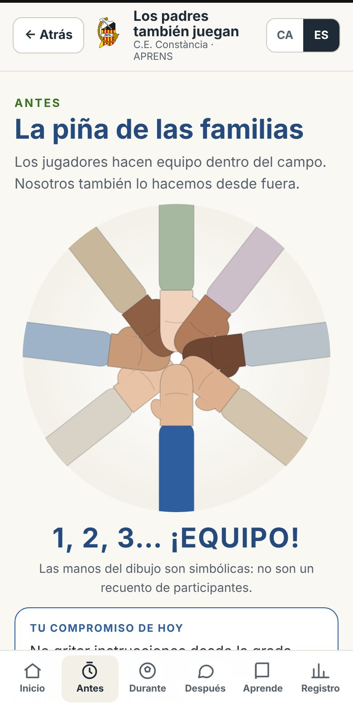
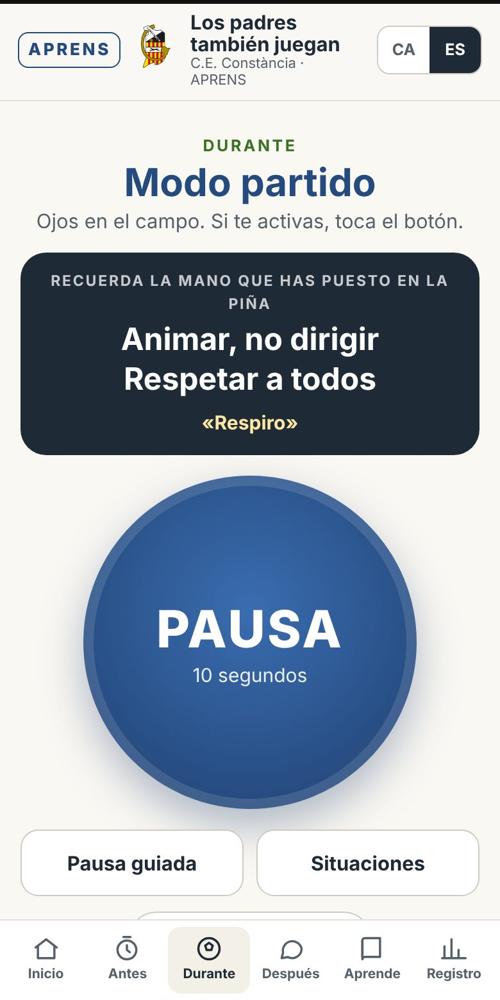
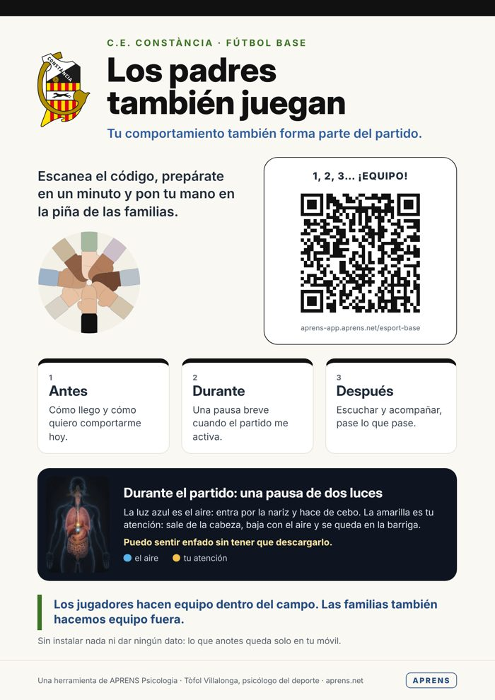

Atención, manejo emocional y acompañamiento de familias, entrenadores y jugadores. Un marco de trabajo para toda la temporada, con fichas prácticas y la app «Los padres también juegan».
La salud deportiva no es incompatible con el rendimiento. Es su base.

Tòfol VillalongaPsicólogo General Sanitario (B-01599) · Psicología del deporteAPRENS Psicología · C/ Mare de Déu de l'Esperança, 70, 2.º · Incaaprens.net · 636 93 76 61 · info@aprens.es
Contenido
Qué encontraréis
Por qué esta guía
La idea central: salud y rendimiento van juntos
El marco de trabajo: materiales, modelo y app
La pirámide del rendimiento
Atención y manejo emocional en el juego
La regulación de los adultos: percibir, acompañar, elegir, actuar
Módulo familias
Módulo entrenadores
Módulo jugadores y jugadoras
Módulo club
Un club, no islas: comunidad y cantera
La app «Los padres también juegan»
Plan de temporada y guiones de sesión
Pilotaje y evaluación
Fichas para fotocopiar
Recursos y contacto
Cómo usar esta guía. Está pensada para coordinadores deportivos, entrenadores y psicólogos que acompañan a un club. Se puede leer entera o por módulos. Las fichas del final se pueden fotocopiar, y la app permite que familias y entrenadores entrenen lo mismo desde el móvil, antes, durante y después de cada partido.
1 · Para empezar
Por qué esta guía
Hace años que trabajo con deportistas jóvenes, con sus familias y con sus entrenadores, y para mí el deporte base es uno de los contextos donde más se puede ayudar a un chico o a una chica a crecer, a nivel físico, emocional y como persona. También es uno de los contextos donde más fácilmente podemos añadirle presión sin querer.
Esta guía recoge y ordena tres materiales de APRENS que hemos trabajado con familias y clubes: «Los padres también juegan. El papel de los padres en el deporte base», «La pirámide del rendimiento» y «Atención y manejo emocional en el deporte». Los une una idea que cada temporada veo en los campos: cuidar la salud deportiva es compatible con desarrollar el rendimiento a largo plazo, aunque a veces implique renunciar a un resultado inmediato. Y la salud tiene valor propio, también cuando el rendimiento no mejora.
Los tres materiales hablan de lo mismo desde lugares distintos. El primero, desde los adultos que rodean al jugador. El segundo, desde la motivación y la orientación a la tarea. El tercero, desde la atención y el manejo de las emociones dentro del juego. Esta guía los integra en una propuesta común de acompañamiento. La práctica de darse cuenta de dónde está la atención, estar con lo que el cuerpo siente sin luchar contra ello y volver a lo relevante se desarrolla en el dosier de atención; aquí la extendemos al trabajo con adultos y con el club.
Primero me acompaño a mí mismo para poder acompañar mejor al deportista.
No se trata de formar adultos que no se enfaden nunca ni jugadores que no se pongan nunca nerviosos. Se trata de que cada uno, desde su papel, aprenda a reconocer lo que siente, a acompañarlo y a elegir cómo actúa, de modo que el niño o la niña no tenga que gestionar las emociones de los adultos y pueda hacer aquello para lo que está en el campo: jugar, aprender y disfrutar.
A quién va dirigida
Coordinación y dirección del club: para definir el clima educativo y el plan de la temporada.
Entrenadores y entrenadoras: para entrenar la atención del jugador, comunicarse de manera educativa y regularse en el banquillo.
Familias: para acompañar sin presionar, antes, durante y después de los partidos.
Psicólogos y profesionales que acompañan al club: como guion de trabajo.
2 · La idea central
Salud y rendimiento van juntos
A menudo se habla de bienestar y de rendimiento como si fueran dos fuerzas opuestas: o cuidamos al chico o buscamos resultados. Lo que observamos, y lo que recoge la psicología del deporte, es que muchas de las habilidades que protegen la salud del deportista son las mismas que pueden sostener su rendimiento a medio y largo plazo.
Contribuciones posibles, según la persona y el contexto:
Clave
Qué aporta a la salud
Qué aporta al rendimiento
Atención
Menos rumiación, más presencia en lo que hace; menos angustia ante el error.
Puede facilitar atender a los estímulos relevantes y tomar decisiones más ajustadas a la jugada.
Regulación emocional
Puede sentir nervios o enfado sin que lo desborden.
Puede volver a participar en la jugada aunque siga sintiendo malestar.
Orientación a la maestría
El éxito es aprender: el valor personal no depende del marcador.
Puede favorecer la continuidad, el aprendizaje y la percepción de autoeficacia.
Clima adulto sereno
Se siente querido juegue como juegue; el deporte no es una carga.
Menos distractores desde la grada y el banquillo; más confianza para arriesgar y probar.
Mirada a largo plazo
Respeta las etapas y el ritmo de cada uno.
No cierra los caminos que llevan al rendimiento adulto.
Nuestra tesis. Cuidar la salud deportiva no es un lujo que solo pueda permitirse quien no compite. Es una condición para que el talento pueda desarrollarse y para que el deportista quiera seguir haciendo deporte dentro de cinco, diez o treinta años. A veces significa renunciar a un resultado inmediato, reducir la carga o parar temporalmente; el dosier de familias lo dice claro: es mejor no cerrar los caminos que llevan al rendimiento a largo plazo, aunque sea a costa del resultado de hoy.
Doble objetivo, un mismo entrenamiento
En la práctica, muchas de estas habilidades se pueden entrenar dentro de la actividad deportiva: en los ejercicios, en la manera de corregir, en cómo recibimos al jugador después del partido y en cómo nos comportamos en la grada. Esto se puede complementar con espacios específicos de formación, escucha o atención profesional cuando sean necesarios.
3 · Marco de trabajo
Materiales, modelo y app
Los padres también juegan
El papel de los padres en el deporte base: qué aporta el deporte, la presión que añadimos, los malos momentos, los partidos, cómo acompañar.
La pirámide del rendimiento
Orientación a la maestría y al ego: cómo la atención y la regulación emocional sostienen la motivación, la adherencia y la autoeficacia.
Atención y manejo emocional
Dos focos de atención, de la situación a la conducta, las creencias que distraen y cómo entrenar el «volver».
El modelo: TEC y AIS
En APRENS trabajamos con la Teoría del Efecto Consciente (TEC) y la Atención Interna Sensorial (AIS). La TEC es para mí una manera de dar un lenguaje común a muchas orientaciones psicológicas que, por caminos distintos, llegan a un mismo punto. Utiliza la idea de hacernos presentes y fiables para nuestro organismo para orientar el acompañamiento de las sensaciones. Esta explicación es una hipótesis propia del modelo, no un mecanismo fisiológico establecido, y la práctica no exige que la activación disminuya. La AIS es su práctica: aprender a darse cuenta de dónde está la atención, a estar con lo que el cuerpo siente sin luchar contra ello, y a volver.
Este trabajo se integra con conocimientos consolidados de la psicología: la atención selectiva y limitada, la regulación emocional, y los principios de las terapias de aceptación y compromiso (aceptar lo que sentimos, tomar distancia de los pensamientos, contactar con el presente y actuar de acuerdo con los valores).
Honestidad con lo que ofrecemos. Distinguimos lo que es conocimiento consolidado de lo que son hipótesis propias del modelo TEC/AIS, que seguimos evaluando. Ni esta guía ni la app son un tratamiento psicológico, ni prometen resultados clínicos ni mecanismos fisiológicos concretos. Son recursos educativos y de entrenamiento. Si el malestar persiste, interfiere en la vida cotidiana o el deportista pide ayuda, facilitaremos una consulta con un profesional sanitario cualificado. El entrenador escucha y acompaña, sin diagnosticar. Ante un riesgo inmediato para la integridad de la persona, hay que activar los servicios de emergencia (112).
Cuatro agentes, un mismo equipo
Trabajamos con los cuatro agentes que rodean al jugador: familias, entrenadores, el propio jugador y el club. Cada módulo de esta guía trata uno, pero todos comparten el mismo lenguaje: percibir, acompañar, elegir, actuar, y la misma práctica de volver.
4 · Motivación
La pirámide del rendimiento
Se lee de abajo arriba: dónde ponemos la atención durante la competición acaba marcando el control que percibimos, cómo regulamos el error, la motivación, la adherencia y, al final, el rendimiento.
RENDIMIENTO
Percepción de autoeficacia
Adherencia al deporte
aprendizaje
Motivaciónintrínseca · extrínseca
resultados
percepción de mejora
Regulación emocionalante el error y la derrota
obtener buenos resultados
aprendizaje y reto
Percepción de control+ · −
miedo y percepción de fracaso
estímulos de aprendizaje
Atención
estímulos de resultados
enfocada en los procesos de aprendizaje
¿Dónde se enfoca mi cuerpodurante la competición?
enfocada en los resultados
Orientación a la maestría
Para percibir éxito, tengo que aprender continuamente.
El éxito como camino: aprender es mi éxito. Me comparo conmigo mismo.
Orientación al ego
Para percibir éxito, tengo que obtener buenos resultados.
El éxito como destino: ganar, ganar y ganar. Me comparo con los demás.
Los resultados pueden generar mucha motivación. Pero si no orientamos al deportista hacia la tarea, la adherencia, el aprendizaje continuo y la capacidad de regular la propia motivación pueden desvanecerse, y con ellos también pueden disminuir el esfuerzo y la ilusión por el deporte. Orientarse a la maestría es como una vacuna: puede ayudar a sostener la motivación cuando los resultados no acompañan, que es precisamente cuando más se necesita.
Qué podemos hacer los adultos
Orientación al ego
Orientación a la maestría
«¿Habéis ganado?» «¿Cuántos goles has metido?»
«¿Qué has aprendido hoy?» «¿Qué te ha salido mejor que la otra vez?»
Compararlo con los compañeros o con el rival.
Compararlo consigo mismo: cómo jugaba hace unos meses y cómo juega ahora.
Objetivos solo de resultado: «tenemos que ganar».
Objetivos de proceso: «hoy, salir jugando desde atrás».
El deportista y el entrenador lo tienen que entrenar. El psicólogo asesora para detectarlo y aprenderlo.
5 · Atención
Atención y manejo emocional en el juego
Dos focos
Juego en marcha
Atención externa
Todo lo que se percibe sobre todo con la vista y el oído.
Un mano a mano con el portero, un regate, un desmarque, un marcaje.
Las indicaciones del entrenador con el balón en juego.
Después de un error técnico, antes de tirar un penalti.
Las correcciones del entrenador después de un acierto o de un error.
Los dos focos son normales y, a menudo, se dan dentro de la misma jugada. A veces queremos estar pendientes de lo relevante, y el cuerpo decide atender a otros estímulos que nos distraen: un pensamiento, una emoción, el ruido de la grada.
De la situación de juego a la conducta
Situación de juegolo que pasa en el campo
El cuerpohábitos aprendidos + creencias sobre la situación
Foco atencionalestímulos relevantes o distractores
Conductala decisión y la acción
La atención es limitada, y el dosier lo formula así: «durante el juego no es el jugador quien decide el estímulo que atiende, lo hace su cuerpo», según los hábitos que ha aprendido en los entrenamientos y según las creencias sobre la situación (lo importante que es, si se siente competente y qué pasará si acierta o si falla). Dicho de otra manera: la atención combina procesos automáticos y voluntarios, y lo que sí podemos entrenar es la capacidad de reorientarnos.
¿Es importante?
«Nos jugamos puntos vitales», «están en juego los objetivos de la temporada»…
¿Soy competente?
«¿Sé resolver un cara a cara?», «¿sé tirar esta falta?»…
¿Y si me equivoco?
«Puedo perder la titularidad», «perderé la confianza del entrenador»…
Aquí es donde los adultos tenemos mucho que ver. Muchos comentarios de la grada y del banquillo alimentan estas creencias («hoy es muy importante», «lo tienes que hacer bien», «si fallas…»): sin querer, añadimos distractores internos. Y las instrucciones desde la grada son distractores externos que compiten con las del entrenador.
El jugador como observador
Durante una jugada, el jugador es en buena parte un espectador de su cuerpo: la atención no es del todo voluntaria. Intentar controlar cada detalle, cada pensamiento o cada emoción en mitad del juego puede añadir distracciones.
No luchar, volver
El cuerpo vive la situación de juego y tendrá pensamientos, emociones y reacciones fisiológicas. No podemos luchar contra eso.
Lo que sí podemos es volver a atender a los estímulos relevantes, con la ayuda de las indicaciones del entrenador.
Y podemos entrenarnos para darnos cuenta de que nos hemos distraído y volver a la jugada.
La clave no es no distraerse nunca, sino darse cuenta antes y volver más pronto.
El dolor no es una simple distracción. El dolor y las señales de lesión se deben comunicar al entrenador, que valorará si hay que detener la actividad y pedir atención sanitaria. Volver a la jugada solo es adecuado si es seguro.
Ejercicios formales
Llevar voluntariamente la atención a un estímulo concreto y mantenerla en él: la respiración, el tacto del balón con las manos, la tensión y la distensión de un músculo. Aparecerán distracciones; darse cuenta y volver es el entrenamiento.
Ejercicios informales
Dentro del juego y de los entrenamientos, utilizar los estímulos que ha indicado el entrenador. Y cuando el jugador se dé cuenta de que se ha distraído, recurrir a una palabra clave o a un gesto (subirse las medias, un estiramiento concreto).
«¡Reset!»«¡A la próxima!»«¡Balón!»«¡Ahora!»
6 · Regulación de los adultos
Percibir, acompañar, elegir, actuar
Las emociones de un partido también nos alteran a los adultos. Ante un error del hijo, una decisión arbitral discutible o un cambio inesperado, el cuerpo reacciona de manera automática. Lo que importa es qué hacemos con esa activación. Queremos entrenar la diferencia entre:
Sentir…
…y descargarlo
…y acompañarlo
Enfado
Gritar, protestar, increpar.
Notarlo en el cuerpo y no descargarlo sobre nadie.
Preocupación
Transmitir presión.
Ofrecer seguridad.
Frustración
Criticar.
Actuar desde el respeto.
1 · Percibirmi cuerpo está reaccionando
2 · Acompañaratención y respiración, sin luchar
3 · Elegir¿qué haría la persona que quiero ser?
4 · Actuaruna conducta coherente con mi compromiso
La respiración de dos luces

Es la práctica central de la AIS que usamos en la app. La luz azul es el aire: entra por la nariz y baja hacia la barriga; hace de cebo. La luz amarilla es tu atención: sale de la cabeza, sigue al aire y se queda anclada en la barriga, aunque el aire vuelva a subir y salir. Es una visualización: el aire va a los pulmones, y lo que notamos en la barriga es el movimiento de la respiración. Respiramos de manera natural y cómoda, sin forzar ni retener el aire.
No hace falta cerrar los ojos: se puede hacer en la grada o en el banquillo con los ojos abiertos. Si atender al cuerpo resulta incómodo, la alternativa es orientarse hacia fuera: mirar tres cosas alrededor, sentir los pies en el suelo, escuchar dos sonidos.
Los colores son una representación pedagógica, no una medida de ningún estado fisiológico.
Reparar también es educar
Todos podemos perder las formas. Eso no nos define como padre, madre o entrenador. Lo que educa es lo que hacemos después:
Reconocer qué ha pasado, sin justificarlo.
Asumir la responsabilidad y pedir disculpas a quien corresponda.
Explicar qué haremos diferente la próxima vez.
Elegir un compromiso concreto para el próximo partido y prepararlo antes de entrar.
Seguridad antes que regulación. Si hay violencia, acoso o riesgo para un menor, primero la protección: avisar al árbitro, al entrenador, al delegado y al delegado de protección, y seguir el protocolo del club. Si hay peligro inmediato, 112. La pausa puede esperar.
7 · Módulo familias
Los padres también juegan
Doce principios
El deporte es un espacio de desarrollo físico, psicológico y social.
El jugador tiene que sentirse querido sea cual sea el resultado.
Acompañamos sin añadir presión.
El entrenador tiene la responsabilidad de la formación deportiva.
Los errores y las derrotas forman parte del aprendizaje.
Evitamos las comparaciones entre jugadores.
Respetamos a árbitros, rivales, entrenadores y familias.
El esfuerzo, la perseverancia, la cooperación y la actitud importan más que el resultado de hoy.
Escuchamos sin invadir ni resolverle los problemas.
El comportamiento de la grada también es la imagen del club.
Los adultos nos preparamos para manejar el nerviosismo, el enfado y la euforia.
Miramos a largo plazo y respetamos las etapas.
La presión que añadimos sin querer
Tipo de mensaje
Ejemplo
Expectativas sobre el rendimiento
«Estoy seguro de que lo harás bien», «confío en ti».
Críticas y desprecio
«Te tienes que esforzar más», «hoy has jugado bien por casualidad».
Preocupación y amenazas
«Si sigues así no te convocarán», «si no juegas mejor, te saco del equipo».
Culpa
«Con el esfuerzo que hago para que juegues, y tú no me das ninguna alegría».
Antes del partido
Cómo llego y qué me puede activar hoy.
Uno o dos compromisos concretos.
Un minuto de respiración de dos luces.
«Disfrútalo.» «Juegues como juegues, te quiero igual.»
Durante el partido
Animar al equipo, no dirigirlo.
Respetar al árbitro aunque no estemos de acuerdo.
Si me altero, pausa antes de decir nada.
Si otros padres pierden las formas, no ponerse a su altura.
Después del partido
Acercarse como cualquier otro día y elegir el momento. Felicitar el esfuerzo y el comportamiento, sea cual sea el resultado; corregir es tarea del entrenador. Si quiere hablar, escuchar; si quiere estar solo, respetarlo. Muchas veces es más útil escuchar y acompañar que analizar enseguida todos los errores.
«Me ha gustado verte disfrutar.» «Si quieres hablar de cómo te has sentido, te escucho.» «¿Quieres que lo hablemos o prefieres descansar?» «El resultado no cambia lo que siento por ti.»
La piña de las familias
Igual que los jugadores hacen piña antes del partido, las familias pueden hacerla desde fuera. Después de preparar su papel, cada adulto puede «poner la mano»: guardando el compromiso para sí mismo, enviándolo a quien quiera o respondiendo la encuesta que prepara el delegado. Es un gesto voluntario de intención educativa: no garantiza una conducta perfecta y no sustituye las normas de convivencia ni el protocolo de protección del club. No se piden confirmaciones individuales, listas ni capturas de participación; la encuesta solo se hará si la herramienta impide que el delegado y el resto del grupo identifiquen quién participa o qué responde; si no podemos garantizarlo, haremos un gesto simbólico sin recuento.
Hoy no vengo solo a ver jugar a mi hijo. Vengo a formar parte de un equipo que acompaña a todos los jugadores.
8 · Módulo entrenadores
El entrenador, figura educativa
El entrenador no solo regula sus emociones: es la figura adulta que puede hacer del equipo un entorno de aprendizaje seguro y respetuoso. Este módulo amplía los materiales originales desde los mismos principios.
Entrenar la atención externa: en qué y cuándo
¿En qué se tiene que fijar?
El balón, el compañero, el contrario, la posición del jugador, hacia dónde mira, el pie…
¿Cuándo se tiene que fijar?
En qué momento de la jugada tiene que atender a cada estímulo para hacer la acción a tiempo.
Repetir las situaciones de juego enseña al cuerpo a detectar los estímulos relevantes y a tomar buenas decisiones, también cuando hay presión. Por eso cada ejercicio debería tener un estímulo relevante y un momento explícitos, y el entrenador debería decirlos en voz alta.
Corregir no es humillar
En lugar de…
Prueba…
«Siempre haces lo mismo. No aprendes.»
«Revisemos qué puedes hacer diferente la próxima vez.»
«Si sigues así, no jugarás.»
«Necesito que vuelvas a tu posición cuando perdemos el balón. Lo trabajaremos el martes.»
«Qué vergüenza de partido.»
«Hoy no nos ha salido. Pensemos una cosa que hemos hecho bien y una para mejorar.»
«Eres un desastre defendiendo.»
«En defensa, fíjate en el hombre, no en el balón.»
La corrección técnica es legítima y necesaria: habla de la acción, es concreta y mira hacia el futuro. La humillación o la descarga emocional habla de la persona, es general («siempre», «nunca»), se hace en público y mira hacia el enfado del adulto. Pregunta útil: ¿lo que voy a decir le ayuda a aprender, o me ayuda a mí a descargar?
Situaciones de banquillo
Situación
Clave y respuesta
Errores continuados
Una sola indicación observable; reconocer el intento antes de corregir; trabajarlo en el entrenamiento.
Bloqueo por miedo a fallar
Permiso explícito para equivocarse; objetivos de conducta (intentar, ofrecerse), no de resultado.
Protesta al ser sustituido
Dejar pasar el momento caliente; validar lo que siente y poner límite a la forma, en privado.
Derrotas repetidas
Objetivos de proceso y hacer visible la mejora aunque el marcador no lo muestre.
Familias que cuestionan decisiones
No discutir justo después del partido; ofrecer una cita y explicar criterios de grupo y de temporada.
Faltas de respeto
Parar, nombrar la norma del equipo y aplicar la consecuencia pactada, con calma.
Antes y después de cada sesión. Una intención educativa en una frase (por ejemplo, «corregir una sola cosa cada vez») y, al terminar, un repaso de dos minutos: qué ha ido bien, qué reacción quiero reparar, qué quiero seguir entrenando. La app lo guía.
9 · Módulo jugadores y jugadoras
Jugar, aprender y volver
De los más pequeños a infantiles
Todavía no es la edad del rendimiento.
Lo prioritario es que se diviertan y jueguen sin miedo a equivocarse.
Atención: juegos breves de «volver» (sentir el balón en las manos, escuchar al entrenador, respirar tres veces).
Palabra clave compartida por todo el equipo.
Cadetes y juveniles
Poco a poco, asumen responsabilidad sobre su rendimiento.
Las situaciones difíciles son ocasiones para fortalecerse.
Atención: identificar sus creencias distractoras y elegir palabra y gesto personales.
Necesitan un apoyo muy especial de los adultos.
Mi vuelta
Cada jugador elige una palabra clave y un gesto, y los entrena en los entrenamientos para que el día del partido salgan solos. El entrenador puede dedicarle cinco minutos al inicio de una sesión y recordarlo en los momentos de juego parado.
Microsesión de 10 minutos (dentro del entrenamiento)
Antes de empezar, explicamos que pueden participar, observar o elegir una alternativa externa (mirar el balón, escuchar sonidos). No hace falta cerrar los ojos ni compartir sensaciones personales. Si la práctica incomoda a alguien, la paramos o la adaptamos. El cierre es voluntario.
2 min · Respirar: tres respiraciones notando el aire que entra por la nariz y la atención que baja hasta la barriga.
3 min · Ejercicio formal: atención al tacto del balón con las manos; cuando aparece una distracción, darse cuenta y volver.
3 min · Ejercicio informal: un rondo con un estímulo relevante explícito; cuando el entrenador dice la palabra clave, todos vuelven al estímulo.
2 min · Cierre (voluntario): «¿Cuándo te has dado cuenta de que te habías distraído? ¿Qué te ha ayudado a volver?».
Salud y rendimiento, juntos. Un jugador que vuelve antes después de un error puede volver a estar disponible para la jugada siguiente, aunque el malestar no haya desaparecido del todo.
El deporte y los estudios
Estudiar también forma parte del entrenamiento. Planificar el tiempo desde el primer día, dosificar pantallas y salidas y mostrar interés por los estudios forma parte de ser deportista. Estudiar y hacer deporte es la mejor combinación para estar preparado para la vida, llegue o no a ser profesional.
10 · Módulo club
Somos un equipo también fuera del campo
El club es lo que hace que todo esto no dependa de la buena voluntad de una familia o de un entrenador. Define el clima educativo, pone normas claras y cuida los canales.
Las familias
Animamos sin dar instrucciones.
Respetamos a árbitros, rivales, entrenadores y familias.
Queremos igual cuando ganan y cuando pierden.
Expresamos las discrepancias con cita y con calma.
Los entrenadores
Pensamos en el progreso de todos a lo largo de la temporada.
Corregimos sin humillar.
Valoramos el esfuerzo, las decisiones y la cooperación.
Somos ejemplo de respeto en el banquillo.
El club
Formación y bienestar por delante del resultado.
Entorno seguro y protocolo de protección.
Canales claros de comunicación.
Formación a familias y entrenadores.
Protección de menores: obligaciones del club. Las entidades deportivas que trabajan con menores deben aplicar un protocolo de protección y designar un delegado o delegada de protección, con un contacto accesible para los menores (Ley Orgánica 8/2021, LOPIVI). Ante indicios de violencia, hay que proteger al menor y comunicarlo a los servicios competentes: avisar al club no sustituye este deber. En caso de peligro inmediato, 112. Las situaciones de protección no esperan una cita ni el final del partido.
Elementos que conviene tener definidos
Código de conducta para familias, entrenadores y jugadores, breve y visible.
Protocolo de protección y delegado o delegada de protección (obligatorios), conocidos por todo el club.
Canal para discrepancias: cita con el entrenador o la coordinación, nunca justo después del partido.
Rol del delegado de equipo: grupo de WhatsApp, encuesta de la piña, contacto con el club.
Calendario de formación: reunión de familias, taller de entrenadores, seguimiento trimestral.
Cartel con el QR de la app en la grada y en el vestuario.
Límites. La piña y la app expresan intenciones educativas. El club sigue siendo responsable de aplicar las normas de convivencia, gestionar los conflictos y proteger a los menores. Ninguna herramienta debe servir para vigilar o evaluar moralmente a las familias.
11 · Comunidad y cantera
Un club, no islas
Las aspiraciones de ser un jugador o una jugadora de éxito no se limitan a poder vivir del fútbol. Para mí, ser un jugador de éxito es poder jugar gran parte de la vida, haciendo amistades, viviendo experiencias y con el sentimiento de pertenecer a un lugar. Y aquí no solo cuentan las actitudes de los padres, de los entrenadores y de los directivos: también cuenta, y mucho, la manera en que el club plantea los equipos.
Un jugador de éxito es el que puede jugar gran parte de la vida.
Los aprendizajes que el club quiere dejar
Queremos que el entorno del club sea un espacio donde los agentes psicosociales (familias, entrenadores, directivos y compañeros) fomenten en el joven aprendizajes clave, al mismo tiempo que aprende los conceptos técnicos, tácticos y físicos del fútbol. No son dos programaciones: es la misma sesión, bien pensada.
Aprendizaje
Cómo se entrena en el campo
Qué aporta el adulto
Respeto
Saludar al rival y al árbitro; aceptar las decisiones; cuidar el material y los espacios.
Ser ejemplo en la grada, en el banquillo y en la directiva.
Esfuerzo
Valorar el intento y la perseverancia, no solo el acierto.
Felicitar el esfuerzo, sea cual sea el resultado.
Tolerancia a la frustración
Volver a la jugada después de un error; aceptar jugar menos un día.
No dramatizar errores ni derrotas; acompañar sin resolverlo todo.
Orientación a la tarea
Objetivos de proceso en cada ejercicio.
Preguntar qué ha aprendido antes que por el resultado.
Cooperación
Ejercicios donde solo se gana si el equipo colabora.
Reconocer en público los gestos de ayuda.
Comunidad
Rituales de equipo y de club; sentirse parte de un grupo.
Animar a todos los jugadores y a todos los equipos, no solo al propio.
La gestión deportiva también educa
Cómo se forman los equipos, cómo se reparten los minutos y cómo se comunican las decisiones envía mensajes muy potentes a los chicos, a menudo más que cualquier charla. Proponemos que el club acuerde unos criterios explícitos:
Formar equipos cuidando también la amistad, la confianza y la continuidad de los grupos, y no solo el nivel de hoy.
Evitar nombres y mensajes que conviertan los equipos en «el de los mejores» y «el de los peores»: cada equipo tiene un papel relevante dentro del club.
En las edades pequeñas, minutos de juego repartidos; a medida que crecen, criterios claros y conocidos por todos.
Puertas abiertas entre niveles durante la temporada, y decisiones explicadas con criterios educativos, al chico o la chica y a la familia.
Niveles y ritmos de crecimiento
El nivel de hoy puede estar influido, entre otros factores, por la edad relativa (la diferencia de edad dentro de una misma categoría según la fecha de nacimiento) y por la maduración biológica, que sigue ritmos distintos en cada chico. Son factores distintos y no determinan hasta dónde llegará cada jugador: hay quien destaca pronto y después se estanca, y hay quien tarda más pero llega más lejos. No debemos confundir las ventajas de hoy con el potencial de mañana. Por eso el club tiene que mirar el proceso y no cerrar puertas demasiado pronto, y tiene que ayudar a los jugadores a compararse consigo mismos.
Equipos conectados: generar sinergias
Entre equipos
Apadrinamientos: un equipo mayor acompaña a uno pequeño en un entrenamiento o un partido.
Entrenamientos compartidos y juegos entre edades.
Ir a ver y animar partidos de otros equipos del club.
De todo el club
Jornadas de club y rituales comunes, como la piña de las familias.
Una comunicación que hable de todos los equipos, no solo del primero.
Espacios de encuentro para familias de distintos equipos.
De jugadores a entrenadores: la cantera del club
Consolidar estos valores es también preparar a quienes mañana querrán implicarse en el club. Un itinerario posible:
Juveniles colaboradores: ayudan en actividades y entrenamientos de equipos pequeños. Si son menores, la participación es voluntaria, con tareas adecuadas a la edad y la supervisión presencial de un adulto responsable; no sustituyen al entrenador ni asumen solos el cuidado del grupo.
Ayudantes de entrenador: con un mentor, formación inicial y esta guía como marco compartido.
Entrenadores del club: con formación federativa y el modelo de club como referencia.
Exjugadores y familias: invitados a volver como delegados, colaboradores o directivos.
Así el club construye una cantera con una idea y un sentimiento compartidos: los entrenadores de mañana habrán vivido, como jugadores, la misma manera de acompañar que después ofrecerán.
Desde la TEC. Entendemos que un entorno previsible, respetuoso y donde el joven se siente parte de un grupo puede hacerse fiable para él, y que en un entorno así es más fácil aprender, equivocarse y arriesgarse. Es una hipótesis de trabajo de nuestro modelo, coherente con lo que sabemos sobre el clima motivacional y la pertenencia, que seguimos evaluando con los clubes.
Indicadores de comunidad
Continuidad: porcentaje de jugadores que siguen en el club entre los que podían continuar; recogida voluntaria de los motivos de salida y, cuando se sepa, de la continuidad deportiva fuera del club.
Pertenencia percibida (cuestionario voluntario y agregado): «Me siento parte del club», «Tengo amigos en el equipo».
Actividades entre equipos realizadas en la temporada.
Juveniles y exjugadores que colaboran como ayudantes, entrenadores o delegados.
12 · Herramienta digital
La app «Los padres también juegan»
Es la herramienta que lleva todo este trabajo al móvil de familias y entrenadores. Funciona desde un enlace o un QR, sin instalar nada, en catalán y en castellano, y con un recorrido distinto para familias y para entrenadores.

Inicio: los tres momentos

La piña de las familias

Modo partido: pausa de 10 segundos
Apartado
Qué hace
Antes
Cómo llego, qué me puede activar, práctica con la silueta, uno o dos compromisos. Termina con la piña de las familias.
Durante
Recuerda el compromiso y la palabra clave. Botón «Necesito hacer una pausa» (reconozco, me acompaño, elijo) y modo rápido de 10 segundos. Doce situaciones de juego.
Después
Cómo recibir al deportista o cerrar con el equipo, «¿He sido fiel a mi mano?», pauta de reparación.
Aprende
Un club, no islas; atención en el juego y mi vuelta; pirámide del rendimiento; doce microlecciones; itinerario de entrenadores.
Registro
Historial privado: pausas por semana, compromisos, situaciones para entrenar, aprendizajes. Sin puntuaciones.
Para clubes
Compromisos compartidos, código de conducta, protocolo, QR y configuración por club.
Privacidad
No pide nombre ni correo. Los registros se guardan localmente en el navegador del móvil; la persona puede exportarlos en JSON o CSV y borrarlos, y si borra los datos del navegador o cambia de dispositivo puede perderlos. El club no ve ningún registro. Compartir un compromiso o entregar una exportación es siempre una decisión voluntaria, y el club no debe pedir registros personales como prueba de implicación. Antes de una implantación con evaluación sistemática hay que revisar el RGPD y la normativa de protección de menores.
aprens-app.aprens.net/esport-base El apartado «Para clubes» genera el enlace y el QR con el nombre, el color, el idioma y un mensaje breve. Para incorporar el escudo, el código de conducta y el protocolo, APRENS prepara el archivo de configuración del club.
13 · Temporada
Plan de temporada y guiones de sesión
Momento
Club y coordinación
Entrenadores
Familias y jugadores
Pretemporada
Modelo de club y criterios para formar equipos. Código de conducta, protocolo y delegado de protección. Enlace y QR.
Taller 1 (90'): atención y comunicación educativa.
Reunión de familias (60'). Cartel y mensaje al grupo.
1.er trimestre
Apadrinamientos entre equipos. Piña de las familias.
Intención educativa y repaso en cada sesión. Microsesiones de 10'.
Antes, durante y después con la app. Palabra clave por equipo.
2.º trimestre
Jornada de club. Revisión con coordinadores: qué funciona.
Taller 2 (90'): situaciones de banquillo y familias.
Compromiso semanal. Palabra y gesto personales (cadetes y juveniles).
3.er trimestre
Valoración e indicadores de comunidad. Juveniles colaboradores para la temporada siguiente.
Intercambio de buenas prácticas.
Cierre: qué hemos aprendido como grada y como equipo.
Reunión de familias · 60'
10' · Por qué el deporte educa y cómo añadimos presión sin querer.
10' · La pirámide: maestría y ego.
10' · Atención: los adultos como distractores.
15' · Práctica: respiración de dos luces y «Mi plan si me altero».
10' · La app y la piña de las familias.
5' · Preguntas y compromiso de grupo.
Taller de entrenadores · 2 × 90'
Atención externa: en qué y cuándo. Diseñar estímulos relevantes para tres ejercicios.
Atención interna: no luchar, volver. Microsesión de 10' para los jugadores.
Comunicación educativa: corregir sin humillar (role-playing).
Proponemos empezar con un pilotaje de cuatro a seis semanas con un equipo o un club colaborador. El objetivo es valorar la viabilidad, la experiencia de uso y los posibles cambios de conducta que perciban los propios participantes, sin presentarlo como una eficacia demostrada.
Semana
Qué se hace
0
Reunión con coordinación y entrenadores. Configuración del club, cartel y QR. Presentación a las familias.
1-4
Uso libre de la app. El delegado prepara la encuesta de la piña en cada partido. Los entrenadores hacen «Antes» y «Después».
2
Contacto breve con los entrenadores: dificultades y ajustes.
4-6
Cuestionario voluntario sin identificadores y una conversación de grupo con cuatro a seis familias y entrenadores (voluntaria y confidencial, pero no anónima). Escucha de los deportistas adaptada a la edad.
Indicadores
Facilidad de uso y utilidad percibida (escala 1-5).
Frecuencia de práctica autodeclarada.
Reconocimiento de activaciones y uso de pausas antes de reaccionar.
Autopercepción de conductas de respeto y ejemplos de reparación.
Escucha voluntaria de los deportistas, adaptada a la edad: «Puedo equivocarme sin que me ridiculicen», «Puedo pedir ayuda», «Tengo ganas de continuar», «¿Qué cambiarías de los entrenamientos?». Respuestas agregadas, para mejorar el entorno.
Valoración cualitativa de entrenadores, familias y coordinación.
Ética y protección de datos. Antes del pilotaje definimos la información a los participantes, la gestión de datos y el plazo de conservación. No se recogen los registros de la app, que quedan en el móvil de cada persona; el cuestionario evita identificadores y relatos reconocibles, y solo comunicamos conclusiones agregadas. No se comparan familias ni entrenadores, y estos datos no permiten demostrar por sí solos una mejora del rendimiento. Si más adelante se quiere una evaluación sistemática (cuestionarios pre y post, exportaciones voluntarias), hará falta un protocolo propio con hoja informativa, consentimiento, seudonimización, plazo de conservación y revisión del RGPD y de la normativa de protección de menores.
15 · Fichas
Fichas para fotocopiar
Ficha 1 · Mi plan si me altero (familias y entrenadores)
Qué no debo hacer
Qué puedo hacer para regularme
Ej.: gritar instrucciones desde la grada
Ej.: tres respiraciones de dos luces
Mi compromiso para el próximo partido:
Ficha 2 · Mi vuelta (jugadores y jugadoras)
Mi palabra clave:
Mi gesto:
¿Cuándo me suele costar más volver? (después de un error, antes de un penalti…)
Ficha 3 · Preparar un ejercicio (entrenadores)
Ejercicio
¿En qué se tiene que fijar?
¿Cuándo?
Ficha 4 · Repaso después del partido (adultos)
He respetado a los árbitros y a los entrenadores.
Familias: he animado sin dirigir el juego.
Entrenadores: he dado indicaciones breves, pertinentes y respetuosas.
He podido reconocer mi enfado o mis nervios.
He hecho una pausa antes de reaccionar.
He acompañado sin presionar, pase lo que pase.
He escuchado antes de corregir.
¿Qué me gustaría repetir?
¿Qué quiero seguir entrenando?
¿Hay algo que quiero reparar?
Ficha 5 · Compromisos compartidos del club
Las familias
Los entrenadores
El club
Ficha 6 · Criterios para formar equipos (coordinación)
Hemos tenido en cuenta la amistad, la confianza y la continuidad de los grupos.
Hemos considerado la edad relativa y la maduración biológica, sin confundir la ventaja de hoy con el potencial.
Los nombres y los mensajes no jerarquizan los equipos.
Las puertas entre niveles quedan abiertas durante la temporada.
Explicaremos la decisión a cada jugador y a cada familia con criterios educativos.
Ficha 7 · Sinergias entre equipos
Equipo
Equipo padrino o invitado
Actividad
Adulto responsable
Fecha
Adaptar los juegos compartidos a las diferencias de edad, tamaño y experiencia.
16 · Recursos
Recursos y contacto

Materiales de APRENS
«Els pares també juguen. El paper dels pares dins l'esport de base» (Los padres también juegan. El papel de los padres en el deporte base).
«La piràmide del rendiment» (La pirámide del rendimiento).
«Atenció i maneig emocional a l'esport» (Atención y manejo emocional en el deporte).
Cartel A4 para el club, con el QR de la app (en catalán y en castellano).
Mensajes de difusión para presidencia, coordinación, entrenadores y familias.
App «Los padres también juegan» (con los apartados «Atención en el juego» y «Un club, no islas») y App APRENS, con las prácticas guiadas de AIS y las herramientas de respiración.
El aprendizaje que proponemos es sencillo de decir y exigente de hacer: reconocer lo que sentimos, acompañarlo y elegir cómo actuamos, para ofrecer a nuestros chicos y chicas un entorno más seguro, respetuoso y educativo. Espero que esta guía os sea útil, y que también lo podáis ver en el día a día del club.
Tòfol Villalonga
Si queréis hablarlo: APRENS Psicología · C/ Mare de Déu de l'Esperança, 70, 2.º · Inca · 636 93 76 61 · info@aprens.es · aprens.net
Los jugadores hacen equipo dentro del campo. Las familias también hacemos equipo fuera. Y nuestra manera de animar, respetar y acompañar forma parte de su educación.